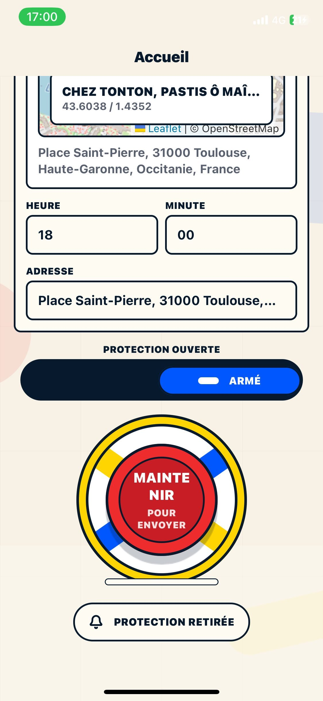
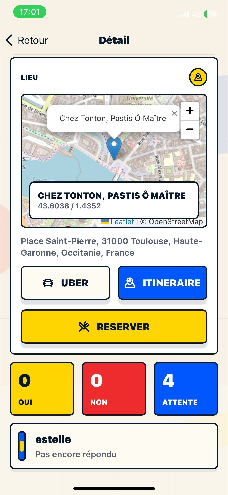

Creer une invitation avec lieu et heure
Choisis un bar, un resto, une adresse ou un point de rendez-vous, puis fixe l'heure. Le groupe recu voit tout de suite les bonnes informations.
Application sortie entre amis
Mates est l'application mobile qui aide un groupe d'amis a se retrouver plus souvent. Tu choisis un lieu, tu fixes une heure, tu invites les bonnes personnes et tout le monde voit enfin la meme info.
Pourquoi cette application
Aujourd'hui, organiser un apero, un diner, un verre ou une soiree entre amis passe souvent par une boucle de messages qui n'en finit pas. On ne sait plus qui vient, quel lieu a ete retenu, ni a quelle heure il faut partir.
Mates transforme ce chaos en un parcours simple: une invitation, un lieu, une heure, un groupe cible, puis des reponses visibles par tous. Le produit est pense pour les groupes d'amis qui veulent se voir souvent sans passer leur temps a s'organiser.
Fonctionnalites
Choisis un bar, un resto, une adresse ou un point de rendez-vous, puis fixe l'heure. Le groupe recu voit tout de suite les bonnes informations.
Tu peux inviter tous tes amis actifs, une seule personne ou un groupe deja prepare pour les sorties recurrentes.
Oui, non, retard estime: l'etat de chaque invitation est centralise pour savoir qui vient vraiment et adapter la sortie.
Chaque personne peut ouvrir l'itineraire vers le lieu, lancer Uber ou retrouver les informations utiles sans revenir dans la conversation.
Quand la sortie demande une reservation, l'app rapproche les participants du lieu et de l'action, au lieu de multiplier les liens et les rappels.
Les notifications rendent l'information visible au bon moment, sans recreer une fatigue de messages permanents.
Comment organiser une sortie
Bar, restaurant, terrasse ou adresse privee: tu poses le lieu en quelques secondes.
Tu selectionnes un ami ou un groupe, puis tout le monde recoit l'information claire.
Chacun confirme, annonce un retard si besoin, ouvre son trajet et rejoint le lieu plus facilement.
Dans l'app


Guides Mates
Le meilleur angle si ton besoin principal est d'envoyer une invitation claire et rapide.
Pour les aperos, diners, bars et sorties qui demandent un peu plus de coordination.
Pour preparer des cercles recurrents et cibler les bonnes personnes a chaque sortie.
Pour aligner lieu, heure, confirmations et retards dans la meme interface.
Pour les sorties ou reservation, trajet et point de rencontre comptent vraiment.
FAQ
Le plus efficace est de centraliser lieu, heure et confirmations dans un seul outil. Mates est pense pour ca: une invitation claire, une audience precise et un suivi des reponses sans relance manuelle.
Mates cible ce cas d'usage: choisir le lieu, envoyer l'invitation, suivre qui vient, puis aider chacun a reserver ou a ouvrir son itineraire.
L'app rassemble les reponses oui, non et retard estime sur un ecran unique. Le createur sait rapidement si la sortie est confirmee.
Oui. Les messageries servent a discuter, mais pas a structurer une invitation. Mates apporte le cadre: lieu, heure, destinataires, reponses et acces rapide au trajet.
Bientot disponible
Mates arrive bientot sur mobile. Si tu veux organiser plus facilement tes sorties, diners, aperos et rendez-vous entre amis, laisse-nous un point de contact.